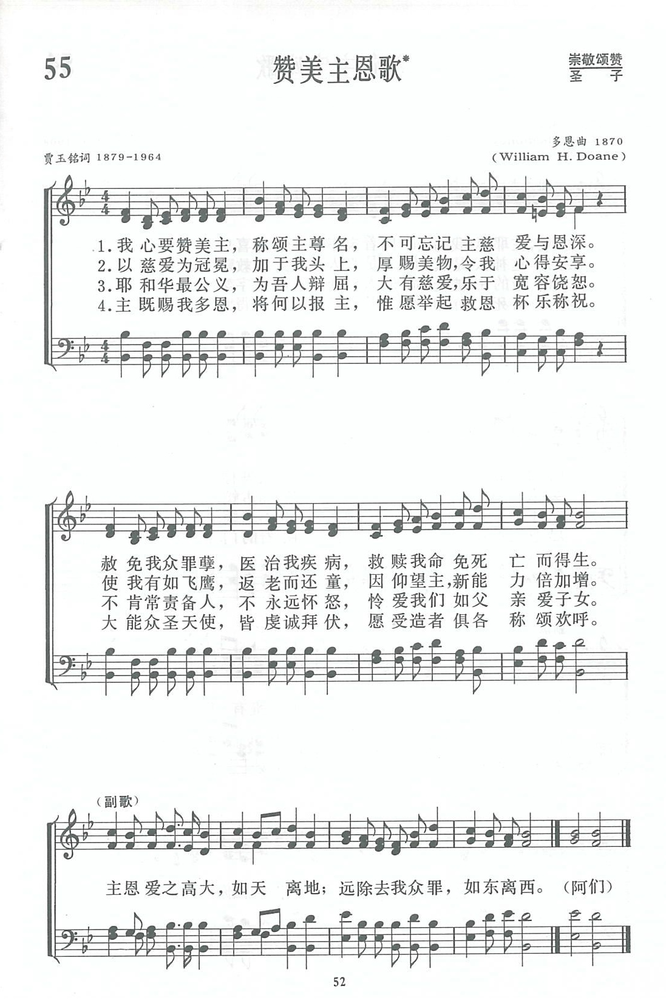

|
|
055首 《赞美主恩歌》 |
|
|
|
|
https://www.zanmeishige.com/tab/13686.html?songbook=1&index=55
 |
|
|
|
|

https://youtu.be/EyRw4AdXNUg
第55首 赞美主恩歌* _贾玉铭 Praise the Lord, O my heart, and sing for His Name
经文：“天离地何等的高，他的慈爱向敬畏他的人也是何等的大”(诗103：11)。
这首诗是我国著名神学家、著作家贾玉铭牧师的创作圣诗之一。
贾玉铭牧师(1879—1964)出生于山东昌乐县。l901年毕业于山东登州文会馆(齐鲁大学的前身)，以后又进长老会为培训传道人员的“教工馆”(相当于以后的神学院)，1904年担任牧职，先在山东沂州府(解放后为临沂地区，今临沂市)长老会任职12年，离山东后历任南京金陵女子神学员教员、滕县华北神学院教员、副院长、南京金陵女子神学院院长各7年；1936年起，在京创办中国基督教灵修学院；抗战时期先迁到四川灌县，再移到成都，最后搬到重庆南山；1945年迁回南京，最后移至上海。1948年他出席在荷兰召开的世界福音会议，被推选为副会长之一；美国某神学院赠他荣誉神学博士学位．
贾牧师对我国基督教的三自爱国运动，起初抱观望态度。但当他明确认识到三自的必要性与正确性后，便积极参加。他说是经过祷告，得主指示：三自“源头不浊”，才作此决定的。1954年中国基督教三自爱国运动委员会在北京开会时，他被选为六位副主席之一。1956年中国基督教三自爱国运动委员会全体委员(扩大)会议在北京举行，他不顾年迈体弱，亲自参加会议，并在会上说：“能够参加盛会感到十分荣幸，得到许多启发与帮助；尤其是听了吴耀宗先生的报告，为新中国教会指出正确和光明前途。我们应当靠着神的大能和圣灵的引导努力地、好好地走上去。”他还提出三点具体意见：“①我们要有经验的信仰和对信仰的经验；②我们要有丰盛的生命和对生命的丰盛；⑧我们要发现真理和对真理的发现。”同时表示他所办的灵修学院和焦维真所办的上海传道人修养院愿与我国其它的神学院一同走合作的道路；并愿用余剩的光阴，尽最大的努力，尽爱国爱教的本分。
贾玉铭生前著有解经和神学论著二十余卷，又编著出竺了《灵交诗歌》、《得胜诗歌》、《灵交得胜诗歌》和《圣徒心声》等四本圣诗集。其中《圣徒心声》篇幅最多，流传较广。现先将《新编》中所选用的五首列表于下：
《新编》 《圣徒心声》 歌名
55 26 赞美主恩歌
58 84 生命活水歌
64 85 主行新事歌(原名沙漠流江河)
129 195 信徒相爱歌
152 3O 主恩日新歌
贾牧师所写的圣诗大多数都有圣经经文为依据。《赞美主恩歌》的第一节，是根据诗篇第103篇2至3节；
第二节是第103篇4至5节；
第三节是第103篇8至9节，
第四节是第116篇13至l4节。
副歌是根据第103篇第11节．
曲调是多恩(事略参阅第11首，见第3首注①)所谱，原是配合盲诗人克罗斯比所写的《救失丧灵魂》的一诗，该诗诗句为：
赶快救灭亡人，救失丧灵魂，
抢救他们离罪恶，免沉沦，
为堕落者哀恸，扶弱而济困，
传主耶穌奇妙大能救恩，
副歌：
赶快救灭亡人，救失丧灵魂。
耶稣满怀慈悲，要救罪人。
《颂主新歌》第463首